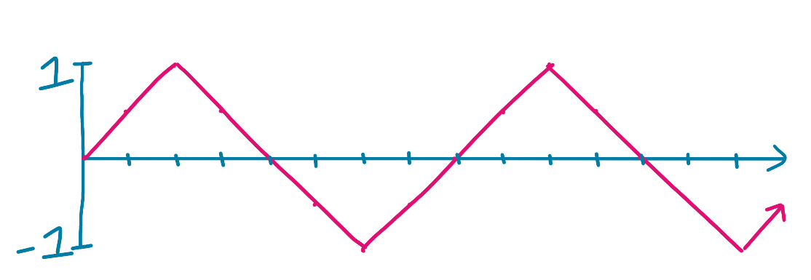
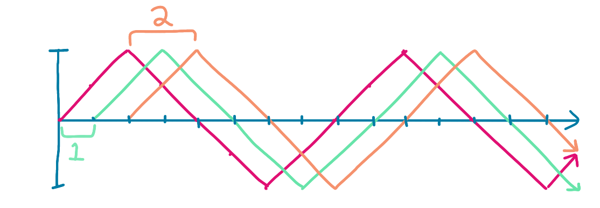
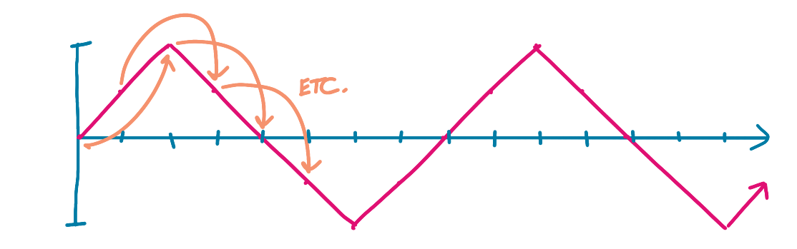
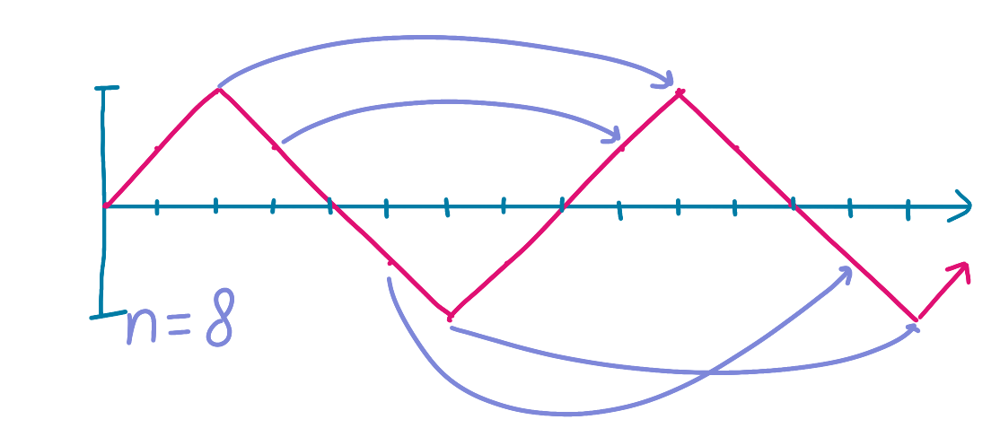
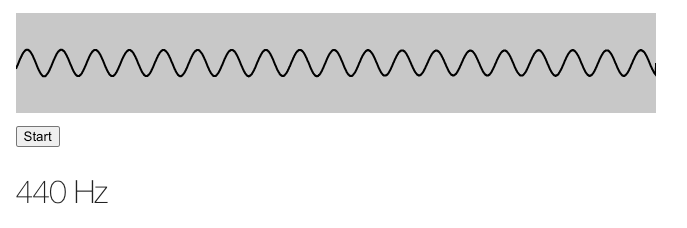

Detecting pitch with the Web Audio API and autocorrelation
Mar 20, 2022 · 1936 words · 10 minutes read
I’ve been playing with the Web Audio API recently, and I made a basic app that will detect the pitch of incoming tones using your microphone. You can try it by pressing “Start” (be sure to try both the sine wave and the frequency displays), and I’ll be walking through how it works below.
Press start to begin
How it works
This basic app relies on the Web Audio API, a powerful module in our browsers that lets us directly work with noise with JavaScript. I also leveraged this when making Morse Codle and my Morse code games, which you can read about here.
The Web Audio API works by connecting a series of nodes to an AudioContext. For this setup, I wanted to connect the user’s microphone as an incoming stream to an AudioContext. I also wanted to attach an AnalyserNode to the stream, which would allow me to access real-time data about the stream.
This is all pretty straightforward, especially if we follow some existing examples from MDN on visualizing the Web Audio API. First, we can access the microphone via getUserMedia. We can check if getUserMedia is valid and, if so, try to access the user’s microphone, which creates the permissions check for the user. If that’s successful, then we can connect our nodes and start the application.
var source;
var audioContext = new (window.AudioContext || window.webkitAudioContext)();
var analyser = audioContext.createAnalyser();
analyser.minDecibels = -100;
analyser.maxDecibels = -10;
analyser.smoothingTimeConstant = 0.85;
if (!navigator?.mediaDevices?.getUserMedia) {
// No audio allowed
alert('Sorry, getUserMedia is required for the app.')
return;
} else {
var constraints = {audio: true};
navigator.mediaDevices.getUserMedia(constraints)
.then(
function(stream) {
// Initialize the SourceNode
source = audioContext.createMediaStreamSource(stream);
// Connect the source node to the analyzer
source.connect(analyser);
visualize();
}
)
.catch(function(err) {
alert('Sorry, microphone permissions are required for the app. Feel free to read on without playing :)')
});
}
For the main application loop via visualize, we want to do the following:
- Draw the sound data on the canvas
- Process the incoming sound data to calculate the frequency
Drawing the sound data on the canvas
Because I was more interested in the processing side, I leaned on the examples in the MDN Visualizations with Web Audio API page, particularly the examples from the Voice-change-O-matic. You can see the code snippets I borrowed here.
Processing the incoming sound data
The real difference between that example app and this one is that we want to calculate the main frequency of the incoming sound, and that’s where the interesting part of it is.
Can we just use the AnalyserNode’s getByteFrequencyData?
The AnalyserNode actually already has all of the data we need, and it even exposes the getByteFrequencyData method, which populates a buffer with the frequency bucket intensity level via Fast Fourier transform.
The main problem is that if we’re trying to get a specific frequency, we can’t just look at the buckets (shout out to this stackoverflow question). If we have a FFT size of 2048, sample rate of 48,000 Hz, our AnalyserNode will generate frequency bins across the range from [0Hz, 24000Hz], with each bin being max_frequency / frequencyBinCount, where frequencyBinCount is FFT size divided by 2. In this case, the bins would 24000 / 1024 == 23.4Hz wide. In other words:
fData[0] is the strength of frequencies from 0 to 23.4Hz.
fData[1] is the strength of frequencies from 23.4Hz to 46.8Hz.
fData[2] is the strength of frequencies from 46.8Hz to 70.2Hz.
fData[3] is the strength of frequencies from 70.2Hz to 93.6Hz.
...
fData[511] is the strength of frequencies from 11976.6Hz to 12000Hz.
fData[512] is the strength of frequencies from 12000Hz to 12023.4Hz.
...
fData[1023] is the strength of frequencies from 23976.6Hz to 24000Hz.
The issue here is that these buckets wouldn’t be exact enough to differentiate between notes in the lower ranges (you can see the note to frequency mapping here). For example, if we want to tune the top string of our guitar in the regular tuning, E, we would want to tune it close to 82.41 Hz (assuming we want the exact match - we won’t be getting into any more advanced theory here). If we want to tune it to F instead, we would want to tune it to 87.3 Hz. If all we know about the sound of the string is that it’s in the 70.2-93.6Hz bucket, we wouldn’t be able to tell which one we’re closer to.
One way to get around this would be to decrease bucket size by increasing the FFT size - we could do this, but our calculations would be more expensive, we’d require more space for this, and we’d have to bump the size up 10-fold to even get closer to to fine-tuned distances. Additionally, we don’t actually need these small bucket sizes for the higher frequency notes, which means we would have a ton of wasted bucket space.
Autocorrelation: we can do some quick math ourselves
Instead of relying on the getByteFrequencyData, we can instead access the sound information directly and calculate the frequency ourselves. One simple way to do this is autocorrelation, a technique where we compare part of a signal, in this case a sound wave, with a delayed copy of itself. By looking at how the signal compares to itself with a given offset, then varying that offset, we can calculate the offset at which the pattern roughly repeats. That would represent the period of the sound wave, and we could easily then calculate the frequency.
Let’s say we have a very simple data series representing the signal at different time steps:
[0.0, 0.5, 1, 0.5, 0.0, -0.5, -1, -0.5, 0.0, 0.5, 1, 0.5, 0.0, -0.5, -1, -0.5]
That might look something like this, where the x-axis is time and the y-axis is amplitude:

We want to compare this signal against what it would look like at different offsets, for example, with offsets 1 and 2:
Original: [ 0.0, 0.5, 1.0, 0.5, 0.0, -0.5, -1.0, -0.5, 0.0, 0.5, 1.0, 0.5, 0.0, -0.5, -1.0, -0.5]
Offset 1: [ 0.0, 0.5, 1.0, 0.5, 0.0, -0.5, -1.0, -0.5, 0.0, 0.5, 1.0, 0.5, 0.0, -0.5, -1.0]
Offset 2: [ 0.0, 0.5, 1.0, 0.5, 0.0, -0.5, -1.0, -0.5, 0.0, 0.5, 1.0, 0.5, 0.0, -0.5]
You can kind of imagine it like this, with multiple graphs at offsets 1 and 2 respectively:

To see where our graph repeats itself, we can look at each potential offset value and look at what it would look like if we multiplied each point on the graph by its offset value. Because we’re expecting a sinusoidal wave, the sum of those products would be highest when the wave repeats itself, as it would basically be squaring each value.
For example, for Offset 2, we would multiply each original value by the value of the offset graph:
Original: [ 0.0, 0.5, 1.0, 0.5, 0.0, -0.5, -1.0, -0.5, 0.0, 0.5, 1.0, 0.5, 0.0, -0.5, -1.0, -0.5]
Offset 2: [ 0.0, 0.5, 1.0, 0.5, 0.0, -0.5, -1.0, -0.5, 0.0, 0.5, 1.0, 0.5, 0.0, -0.5]
Product: [ 0.0, .25, 0.0, -.25, 0.0, .25, 0.0, -.25, 0.0, .25, 0.0, -.25, 0.0, .25]
Sum: 0.25
Or, another way to think about this, we would multiple each value in the original by its value two timesteps later:

This yields a total of 0.25 for this offset - not a strong contender!
You could imagine doing this for each offset. At some point, if our wave is regular, we’ll reach the point where the wave repeats itself. In this case, with offset 8, we would be multiplying the points by themselves, as the full offset means the graph repeats.
Original: [ 0.0, 0.5, 1.0, 0.5, 0.0, -0.5, -1.0, -0.5, 0.0, 0.5, 1.0, 0.5, 0.0, -0.5, -1.0, -0.5]
Offset 8: [ 0.0, 0.5, 1.0, 0.5, 0.0, -0.5, -1.0, -0.5]
Product: [ 0.0, .25, 1.0, .25, 0.0, .25, 1.0, .25]
Sum: 3.0

With a sum of 3, this would be the largest sum, and we’d know that our wave repeats itself every 8 timesteps. If our total time data length is 1 second cut into 15 time steps, then our frequency would be 15 / 8 = 1.875 Hz.
What would this look like in code? We could do the following:
// Start with a bufferLength of the analyser's FFT size
var bufferLength = analyser.fftSize;
// Actually create the buffer
var buffer = new Float32Array(bufferLength);
// Populate the buffer with the time domain data
analyser.getFloatTimeDomainData(buffer);
// Create a new array of the sums of offsets to do the autocorrelation
var offsetSums = new Array(bufferLength).fill(0);
// For each potential offset, calculate the sum of each buffer value times its offset value
for (let offset = 0; offset < bufferLength; offset++) {
for (let j = 0; j < SIZE - i; j++) {
offsetSums[offset] = offsetSums[offset] + buffer[j] * buffer[j+offset]
}
}
// Calculate the offset with the highest value
var maxValue = -1;
var bestOffset = -1;
for (var i = 0; i < offsetSums.length; i++) {
if (offsetSums[i] > maxValue) {
maxValue = offsetSums[i];
bestOffset = i;
}
}
// Once we have the best offset for the repetition, we can calculate the frequency from the sampleRate
var frequency = sampleRate / bestOffset
That’s pretty much it! All that’s left is some UX to smooth the display changing (we don’t want to flash a new value every animation frame, though you can try it above) and translate the frequency into a note.

You can see the full source code here.
Can we do better?
One of the drawbacks of this basic autocorrelation is that it has trouble with sounds with multiple stacked notes - think of a piano note that actually has that same note layered across different octaves. The basic detector does well with my 440Hz tuning fork, but when I try to tune the A string on my guitar and play a more complicated sound wave (the guitar string vibrating), it will switch between detecting the 110Hz tone and 440Hz, depending on how close I am to the microphone. Another drawback is that it’s not as efficient as it could be; since we’re calculating each offset across the entire sample, leading to quadratic complexity.
There are also many ways to tune this basic detection further, such as trimming the sound data to only run on interesting parts of the tone and doing parabolic interpolation, where we assume that our peak isn’t a sharp point on the graph but instead a smooth parabola between the points on either side - we can use the highest point of the parabola for even more accuracy.
I chose this basic approach because 1) it’s easy to implement and follow along with the code and 2) it works pretty well for my use case. If you’re interested in more of the intricacies, I highly recommend checking out the pitch detection algorithm page on Wikipedia; definitely a rabbit hole!
This will eventually be part of an interactive ear training app, where you will listen to a tone and have to repeat it — this pitch detection will be the backbone of processing the incoming sound and translating it to the note.
It’s a good start for now!